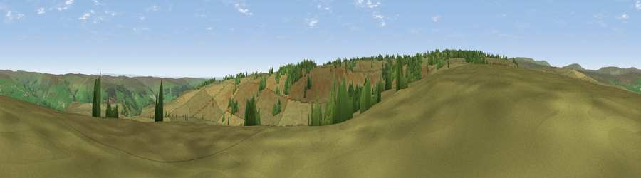

Viewpoint near Lofthouse
#21342 in England · top 46% of its area beats it · near LofthouseWhere it is
The exact computed spot (SE 08175 70425). Click the marker for map links.
The view, rendered

A 360° render of this exact spot computed from the terrain model, tree cover and land cover — summer colours, afternoon light, calibrated against photographs of famous viewpoints. Real trees, hedges and buildings will differ in detail.
The panorama
Grey silhouette: terrain skyline in each direction (720 bearings, Earth curvature and refraction included). Dashed green: skyline with trees (+15 m) and buildings (+8 m) as obstacles. Blue strip: how far the ground is visible on each bearing.
Where the view opens
Wedge length = distance to the farthest visible ground on that bearing (vegetation-aware). Rings at 10, 25 and 50 km.
What fills the view
91% grassland · 8% woodland
Angular shares of the visible panorama (visual magnitude), not map area. Landscape diversity 0.14 (0–1 Shannon).
Key numbers
More beautiful places nearby
The staircase of upgrades: each row has a higher view potential than everything closer. Driving times are estimates from straight-line distance, calibrated against real road routing — check an actual route before setting out.
| Place | Direction | Drive | Score |
|---|---|---|---|
| Stock Ridge | NW · 2 km | ~5 min | 52.7 |
| Sikes Ridge | SSW · 3 km | ~7 min | 59.7 |
| Viewpoint c9388_8101 | WSW · 3 km | ~8 min | 60.1 |
| Viewpoint near Lofthouse | NNE · 6 km | ~13 min | 66.1 |
| Viewpoint near Lofthouse | NNE · 8 km | ~15 min | 68.2 |
| Viewpoint near Bewerley | SE · 8 km | ~16 min | 76.8 |
| Viewpoint near Buckden | NW · 15 km | ~26 min | 77.3 |
| Viewpoint near East Witton | NNE · 16 km | ~28 min | 77.8 |
54.12961, -1.87639 · source: screening · position refined by local search. Computed location — check access rights before visiting.